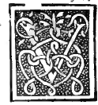
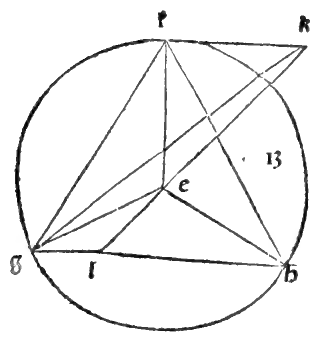
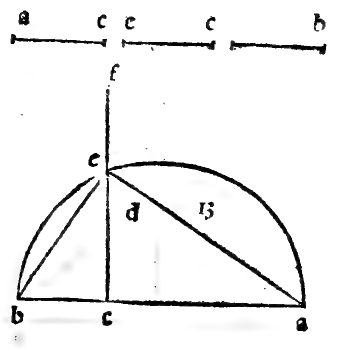
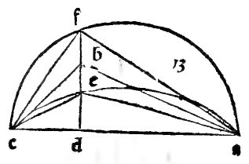

CAPITEL XXVII¶
Von der Anfertigung des Würfels und seinem Verhältniss zur Kugel.

Es folgt zu zeigen, wie der Kubus gebildet wird, und welches das Verhältniss zwischen seiner Seite und dem Durchmesser der Kugel sein muss, damit sie ihn genau umschliesse. Deswegen sage ich, genannter Körper müsse auf folgende Art gebildet werden, nämlich: zuerst nehme man den Durchmesser der Kugel an, in welche wir ihn genau einzufügen beabsichtigen. Und dieser sei die Linie ab, über der ich den Halbkreis db beschreiben werde. Und dann werde ich den Durchmesser im Punkte c theilen, so wie ich es bei der Bildung der vorhergehenden Pyramide gemacht, nämlich dass der Theil c doppelt so gross als bc sei, und die Linie cd ziehe man senkrecht zu ab, und man ziehe ferner noch die Linien db und da.
Sodann bilde man ein Quadrat, wovon alle Seiten gleich der Linie bd sind, und dies Quadrat sei efgh.’ Und über seinen vier Ecken errichte man vier Senkrechte zur Fläche des genannten Quadrats, wie es die zwölfte des elften lehrt. Und Jede dieser Senkrechten sei auch gleich der Linie bd angenommen, und es seien die genannten vier Senkrechten ek, fl, gm, hn. Und alle diese vier Senkrechten werden nach der sechsten des besagten elften gleichweit von einander abstehen. Und die von jenen und den Seiten des Quadrats eingeschlossenen Winkel sind, gemäss der Definition der Senkrechten auf der Fläche, Rechte.
Sodann verbinde man die Endpunkte dieser Senkrechten, indem man die Linien kl, Im, mn, nk zieht. Wenn man diese Dinge mit Sorgfalt genau beachtet, so wird der Kubus fertig sein, den wir zu bilden suchten, von sechs quadratischen Flächen umschlossen, was bewiesen wird durch die vierunddreissigste des ersten. Die vier Oberflächen, welche ihn umschliessen, und zwar diejenigen, deren gegenüberliegende Seiten die vier Senkrechten sind, sind sämmtlich quadratisch. Dass die Basis quadratisch sei, zeigt sich klar aus unserem Satze, und ebenso wird durch die genannte vierunddreissigste des ersten und die zehnte des elften bewiesen, dass die höchste Grenzfläche, nämlich klmn auch ihrerseits quadratisch sei.
Und ebenso zeigt sich noch durch die vierte des genannten elften, dass alle Seiten des Kubus rechtwinklig auf ihren beiden gegenüberstehenden Flächen stehen. Und eben dieser wird genau von der Kugel vom angenommenen Durchmesser umschrieben sein. Daher wird der genannte Durchmesser in Potenz stets das Dreifache der Seite des genannten Kubus sein, d, h. das Quadrat des genannten Durchmessers wird dreimal so gross sein, als das Quadrat der Kubusseite. Wenn z. B. der Durchmesser 1/ 300 wäre, so müsste die Seite des Kubus genau 10 sein. Die Kenntniss davon ist für viele nothwendige Pralle angemessen.
Marginal Woodcut Diagrams (Paganini 1509)¶

Folio 0032 Diagram 3¶

Folio 0033 Diagram 1¶

Folio 0033 Diagram 2¶